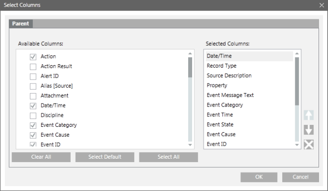

Select Columns Dialog Box
The Select Columns dialog box allows you to add, remove, or reorder columns in a log view. You can access this dialog box using any of the following methods:
- Clicking the Select Column icon.
- Clicking the Select Column icon in the Detailed Log tab.
- Clicking the drop-down arrow on a column header and selecting the Select Column menu option.
- Right-clicking a column entry and selecting Select Column menu option.

Select Columns Dialog Box Components | |
Name | Description |
Parent tab | Allows you to add, remove, or reorder parent columns in the log view. |
Available Columns | Displays all the columns associated with the log view. |
Selected Columns | Displays the default columns of a log view. You can add columns to the selected columns list by selecting the check box associated with each column in the Available Columns list. |
Select Default | Selects the default columns in the Available Columns list. |
Select All | Selects all the columns in the Available Columns list. |
Clear All | Clears all the columns in the Available Columns list. |
Move Up | Moves the selected column one step up in the Selected Columns list. The Move Up button is unavailable if you select the column on the top. |
Move Down | Moves the selected column one step down in the Selected Columns list. The Move Down button is unavailable if you select the column at bottom. |
Remove | Removes the selected column from the Selected Columns list. |